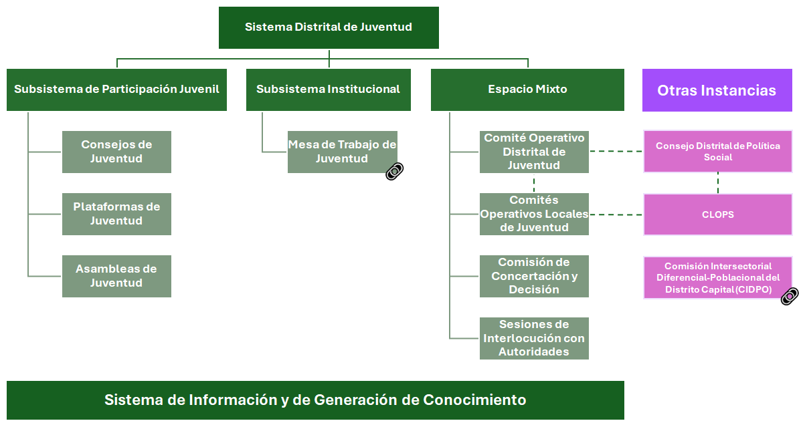

¿Qué es el Sistema Distrital de Juventud?
El Sistema Distrital de Juventud (SDJ) es el motor fundamental de la ciudadanía juvenil en Bogotá, configurándose como el andamiaje institucional para la garantía de derechos y la incidencia real de las juventudes en la gestión pública. Este sistema constituye la materialización técnica y política de la Ley 1622 de 2013 y su modificatoria, la Ley 1885 de 2018, marcos que trascienden la visión asistencialista para reconocer a las y los jóvenes como sujetos políticos con autonomía.
Normatividad vigente
El marco normativo que orienta el funcionamiento del sistema, sus instancias, competencias, responsabilidades y mecanismos de articulación territorial y distrital están contenidos en las siguientes normas:
Orden Nacional
- Ley 1622 de 2013 (Ley Estatutaria de Juventud)
- Ley 1885 de 2018 (Modifica la Ley Estatutaria de Juventud)
- Conpes 4040 (Pacto Colombia con las Juventudes)
Orden Distrital
- Decreto 647 de 2025 (Decreto Único Sector Integración Social: Sistema Distrital de Juventud)
- Decreto 642 de 2025 (Decreto Único Sector Gobierno: Estímulos, Incentivos y Acompañamiento para Consejeros de Juventud)
- Decreto 543 de 2023 (Regula el Consejo Distrital de Política Social e instancias derivadas)
Estructura del Sistema

Conoce las instancias
Consejos de Juventud
Son espacios autónomos de representación conformados por jóvenes elegidos por voto popular. Funcionan como la voz oficial y democrática de las juventudes, encargándose de ejercer control social, asesorar y proponer acciones frente a las políticas y proyectos del Distrito. Hay un Consejo de Juventud para cada una de las 20 localidades y un Consejo Distrital de Juventud.
Periodicidad de sesión: Autónoma.
Entidad que brinda acompañamiento técnico: Secretaría Distrital de Gobierno (SDG).
Plataformas de Juventud
Son escenarios autónomos de encuentro y trabajo en red donde se reúnen organizaciones, colectivos y procesos juveniles de los territorios, sin importar si tienen o no personería jurídica. Sirven para coordinar agendas colectivas, articular esfuerzos y promover la interlocución entre las diferentes iniciativas ciudadanas de los y las jóvenes. Hay una Plataforma de Juventud para cada una de las 20 localidades y una Plataforma Distrital de Juventud.
Periodicidad de sesión: Autónoma.
Entidad que brinda acompañamiento técnico: Instituto Distrital de la Participación y Acción Comunal (IDPAC).
Asambleas de Juventud
Representan el máximo espacio abierto de consulta del movimiento juvenil, donde tienen cabida todas las formas de expresión, desde jóvenes asociados en colectivos hasta jóvenes independientes. Funcionan como un gran foro público cuyos informes y propuestas alimentan directamente la agenda pública y la toma de decisiones en la ciudad.
Periodicidad de sesión: 2 veces al año, convocadas por derecho propio.
Entidades que brindan acompañamiento: Secretaría Distrital de Integración Social (SDIS), Secretaría Distrital de Gobierno (SDG), y el Instituto Distrital de la Participación y Acción Comunal (IDPAC).
Comités Operativos de Juventud
Son espacios mixtos de trabajo (a nivel local y Distrital) donde se sientan en la misma mesa los actores juveniles (consejeros, plataformas, organizaciones, jóvenes no organizados) y los delegados de las instituciones públicas. En estos comités se dialoga, se construyen planes de trabajo y se hace un seguimiento detallado y periódico a la implementación de la Política Pública de Juventud en los territorios.
Periodicidad de sesión: A nivel local, de forma ordinaria cada dos (2) meses, y a nivel distrital, de forma ordinaria cada tres (3) meses, y en todo caso, se puede sesionar de forma extraordinaria cuando se requiera.
Entidad que brinda acompañamiento técnico: Secretaría Distrital de Integración Social (SDIS).
Consulte las actas de los Comités Operativos Locales de Juventud
Consulte las actas del Comité Operativos Distrital de Juventud
Comisiones de Concertación y Decisión
Son la instancia estratégica donde se negocian y planean las agendas públicas juveniles para hacerlas realidad. Aquí, los representantes del gobierno y las juventudes dialogan para definir los mecanismos de ejecución e incidir activamente en la planificación de las acciones y los presupuestos del Distrito Capital.
Periodicidad de sesión: A nivel distrital, de forma ordinaria cada tres (3) meses. A nivel local, de forma concertada entre Alcaldías Locales y jóvenes delegados de consejos y plataformas.
Entidades que brindan acompañamiento técnico: A nivel distrital, la Secretaría Distrital de Integración Social (SDIS). A nivel local, la Secretaría Distrital de Gobierno (SDG).
🔗 Consulte las actas de la Comisión Distrital de Concertación y Decisión
Sesiones de interlocución
Son escenarios formales de diálogo de alto nivel entre los jóvenes y las principales autoridades gubernamentales. A nivel distrital, garantizan que las juventudes se reúnan mínimo dos veces al año con el Alcalde o Alcaldesa Mayor y su gabinete, así como con el Concejo de Bogotá; y a nivel local, con las Alcaldías Locales y las JAL, para presentar y debatir directamente sus propuestas.
Periodicidad de sesión: 2 veces al año.
Entidad que brinda acompañamiento técnico: Secretaría Distrital de Gobierno (SDG).
Mesa de Trabajo de Juventud
Es el motor institucional del Distrito. En esta mesa se reúnen exclusivamente los representantes de las diferentes entidades y secretarías del gobierno para coordinar, articular y hacer seguimiento a la ejecución del Plan de Acción de la Política, asegurando que el Estado trabaje unido para garantizar los derechos de las juventudes.
Periodicidad de sesión: Una vez al mes de forma ordinaria.
Entidades que brindan acompañamiento técnico: Secretaría Distrital de Integración Social (SDIS), y el Instituto Distrital de la Participación y Acción Comunal (IDPAC).
🔗 Consulte las actas de la Mesa de Trabajo de Juventud
Consejos de Política Social
En el nivel distrital, el Consejo Distrital de Política Social es una instancia consultiva presidida por el Alcalde o Alcaldesa Mayor para el desarrollo de la política social, y cuenta con una sesión anual para temas de juventud. En el nivel local, los Consejos Locales de Política Social (CLOPS), presididos por los alcaldes y alcaldesas locales, son espacios de articulación territorial de la política social, y pueden o no contar con sesiones anuales en materia de juventud, según las necesidades y agendas priorizadas en cada territorio.
Periodicidad de sesión: A nivel distrital, 1 sesión al año para temas de juventud. A nivel local puede o no haber sesiones sobre de juventud.
Entidad que brinda acompañamiento técnico: Secretaría Distrital de Integración Social (SDIS).
🔗 Consulte las actas del Consejo Distrital de Política Social en materia de juventud